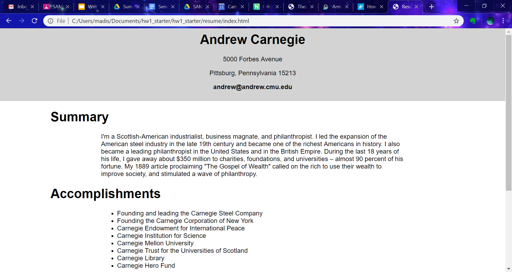

Carnegie Mellon University: Summer Academy for Math and Science
During my time at the Summer Academy for Math and Science, or SAMS, I learned 3 different coding languages. For the first week we learned HTML as well as CSS to code the frontend of websites. The second week we learned how to use and understand Javascript. During our third week we went over how to use all three languages together.
Week 1: Resume and SAMS-tagram
The websites we created were the "resume" of Andrew Carnegie and a class version of instagram called SAMS-tagram.
Week 2: Moodboard and Typing Game
The websites we created were Moodboard, which allowed the user to paste links into the text bax to create images on the website and when the page was refreshed the pictures are removed, and Typing Game, which randomly generates 1 of 20 words every 3 seconds and when you type one of the words shown on the screen it disapears when you click enter or submit.
Week 3: To- Do List and SAMS-tagram 2.0
The websites we created were To Do List, which allows the user to type into the stick note and the not will pop up on the bottom of the screena and when the note is clicked it removes, and SAMS-tagram 2.0, which allows us to actually create posts and navigate to a profile page of Andrew Carnegie and modify it using the edit profile text boxes.